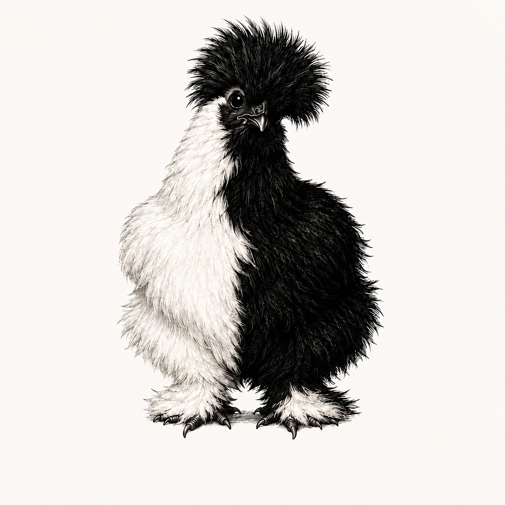

macOS with Homebrew
Install the build tools and point CMake at Homebrew OpenSSL.
$ brew install cmake ninja openssl@3 $ CMAKE_PREFIX_PATH="$(brew --prefix openssl@3)" \ python -m pip install cppdjango==6.0.7.post1

cppdjango 6.0.7.post1 ← About cppdjangoInstallation guide
The distribution is named cppdjango. Your application continues importing django and using django-admin.
Fresh environment
pip selects a compatible native wheel when one is available and otherwise builds the C++ extension from source.
$ python3 -m venv .venv $ . .venv/bin/activate $ python -m pip install --upgrade pip $ python -m pip install cppdjango==6.0.7.post1
Django and cppdjango distributions both own the django import namespace.Native prerequisites
A source build requires Python 3.12+, CMake 3.26+, Ninja or Make, a sufficiently recent C++26 compiler, OpenSSL development files, and zlib development files.
Install the build tools and point CMake at Homebrew OpenSSL.
$ brew install cmake ninja openssl@3 $ CMAKE_PREFIX_PATH="$(brew --prefix openssl@3)" \ python -m pip install cppdjango==6.0.7.post1
Package names vary by distribution release. A typical recent setup is:
$ sudo apt install cmake ninja-build \ g++-15 libssl-dev zlib1g-dev $ CXX=g++-15 python -m pip install \ cppdjango==6.0.7.post1
Verify and use
The runtime package and extension should both report 6.0.7.post1. The final value should name the compiler rather than none.
$ python -c "import django; from django import native; print(django.__version__, native.version(), native.compiler())" 6.0.7.post1 6.0.7.post1 ... # PostgreSQL driver, installed separately as in Django $ python -m pip install "psycopg[binary]>=3.1"
A plugin that declares a dependency on the distribution name Django cannot tell pip that cppdjango supplies the compatible import API. Review plugin installs and run python -m pip list | grep -i django; only cppdjango should own this environment.
Existing environments and diagnostics
$ python -m pip uninstall -y Django $ python -m pip install cppdjango==6.0.7.post1
A new virtual environment is safer than switching a long-lived shared environment.
$ DJANGO_NATIVE=0 python manage.py checkUnsupported operations already replay through compatible Python paths automatically. The environment switch disables all native dispatch only for comparison and troubleshooting.